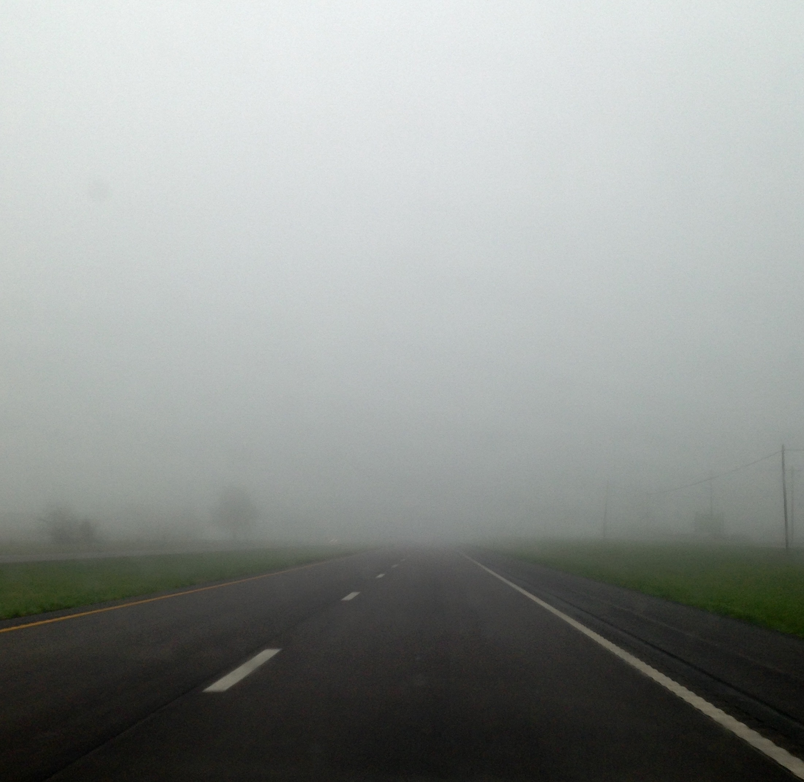

Velvet Rot is a fictional queer grungegaze band known for their hazy and distorted
sound. Formed in 20XX, the band has captivated audiences with their introspective lyrics and restless
emo energy.
Drawing inspiration from Forest Green, Microwave, Mom Jeans, PALESKIN, and Ethel Cain, the band makes
music for those who feel like outsiders, embracing the beauty in melancholy and the power of
self-expression.
Rowan Vale
(they/them)
Vocals and guitar
Rowan is pansexual and non-binary. Their washed-out guitar textures and intimate lyrics give
Velvet Rot its signature sound. Rowan's songwriting often explores themes of identity, love, and
the struggles of navigating a world that doesn't always understand them.
Ellis Wren
(he/they)
Bass and backing vocals
Ellis is an asexual and genderqueer musician. Their deep, resonant bass lines provide the
foundation for Velvet Rot's music, while their backing vocals add depth and harmony to the
band's sound.
Jude Mercer
(he/him)
Drums
Jude is a bisexual cis man with a grungy style and a love for raw, energetic performances. His
drumming drives the band's rhythm and adds a dynamic edge to their music.
Music
Three fictional albums have been released by Velvet Rot, each exploring different themes and sonic
landscapes. The band's music is available on all major streaming platforms, and they continue to create
new material that resonates with their growing fanbase.
Sunset Window
Velvet Rot's debut album, showcasing their signature sound and introspective lyrics.
EP | Released
Impassable
The band's sophomore album, exploring themes of isolation and self-discovery.
LP | Released

Mary, Maria
The band's latest album, delving into themes of love, loss, and the complexities of human
emotion.
LP | Released
Watch
Velvet Rot's music videos and live performances are available on their official YouTube channel.
Fans can experience the band's visual storytelling and energetic stage presence through these
videos.
This video is included as musical inspiration for the fictional band Velvet Rot. The band draws
inspiration from the hazy and distorted sound of Forest Green, incorporating similar elements into
their own music.